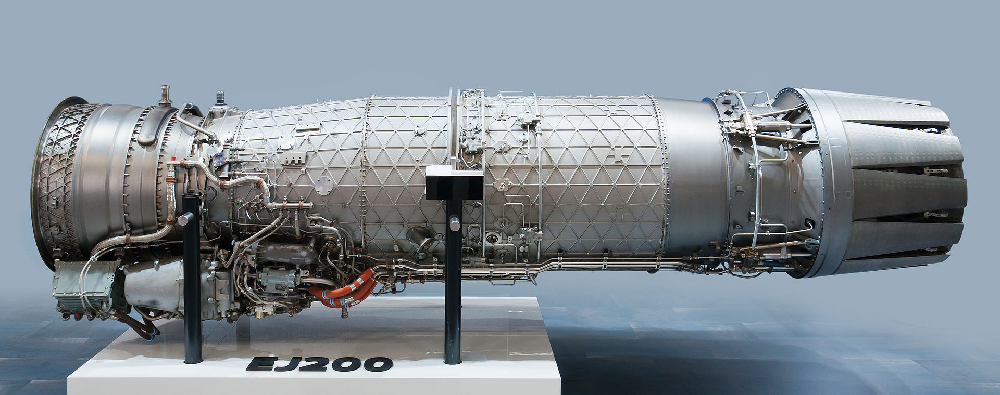

The Eurojet EJ200 is a military low-bypass turbofan used as the powerplant of the Eurofighter Typhoon. The engine is largely based on the Rolls-Royce XG-40 technology demonstrator, which was developed in the 1980s. The EJ200 is built by the EuroJet Turbo GmbH consortium. Providing 20,000 pounds of thrust, it is one of the most advanced engines in its class and powers the Eurofighter Typhoon.
